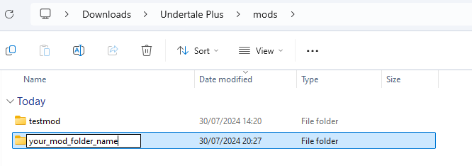
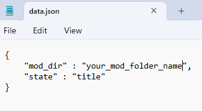

Game Setup
After following the downloading guide, make a new folder in the mods folders and name it the title of your mod.

Then open 'data.json' in the root folder and change '"mod_dir" : "testmod",' to '"mod_dir" : "your_mod_folder_name",'
I have already set it up so that upon starting you won't see the mod selection screen.

You’re going to want to copy the contents of the example mod folder into your game’s folder, so that you have some base files to start off with.
After this you can delete the test mod folder without worrying about anything and jump right into modding!
Requirements
As stated in the Downloading Section you will need to Install Love2d to your PC.
I recommend that you download VS Code as your code editor,
I recomend you follow < target="_blank" href="./index.html">this tutorial to setup Love2d and VS Code.